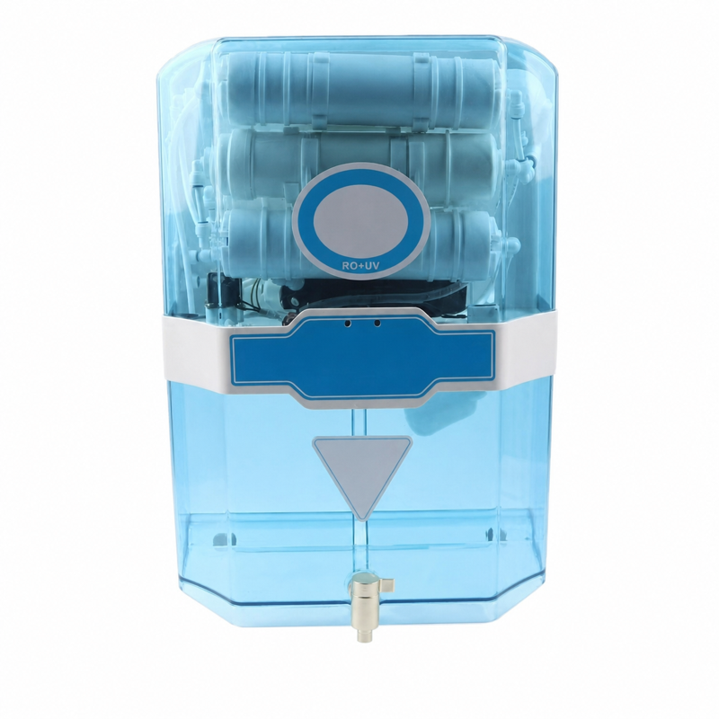
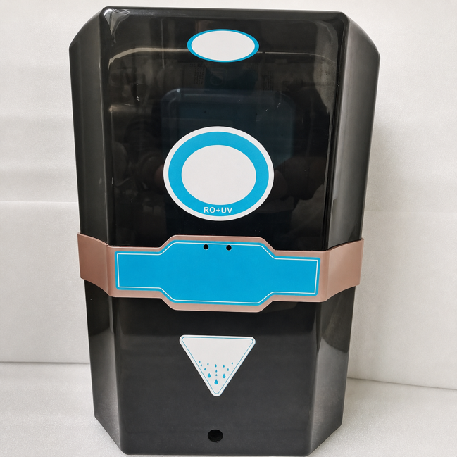
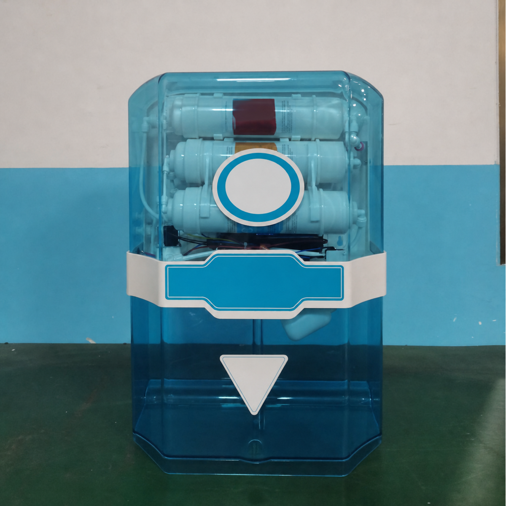

Máy lọc nước RO dạng tủ — 5 hoặc 6 cấp, UV tùy chọn
Máy lọc nước RO dạng tủ. 5 hoặc 6 cấp lọc; UV: tùy chọn; OEM/ODM: có thể cung cấp theo dự án.

hướng dẫn lựa chọn kỹ thuật
Tùy chỉnh theo dự án: xác nhận trước khi báo giá. Lưu lượng; Kích thước; Lọc tiêu chuẩn; yêu cầu về bơm; Điện áp; UV Công suất; Số lượng; chứng nhận cần có.
- Lưu lượng
- Kích thước
- Lọc tiêu chuẩn
- yêu cầu về bơm
- Điện áp
- UV — Công suất
- Số lượng
- chứng nhận cần có
OEM/ODM
OEM/ODM: có thể cung cấp theo dự án. Xác nhận kiểu kết nối và yêu cầu dự án trước khi yêu cầu báo giá.
xác nhận trước khi báo giá
Ứng dụng


Sản phẩm
So sánh với máy lọc RO khung mở 5/6/7 cấp.
FAQ
UV — tùy chọn?
UV: tùy chọn; xác nhận trước khi báo giá.
Tùy chỉnh theo dự án?
Tùy chỉnh theo dự án: xác nhận trước khi báo giá. Lưu lượng; Kích thước; Lọc tiêu chuẩn; yêu cầu về bơm; Điện áp; UV Công suất; Số lượng; chứng nhận cần có. Xác nhận kiểu kết nối và yêu cầu dự án trước khi yêu cầu báo giá.
Tùy chỉnh theo dự án
Xác nhận kiểu kết nối và yêu cầu dự án trước khi yêu cầu báo giá.